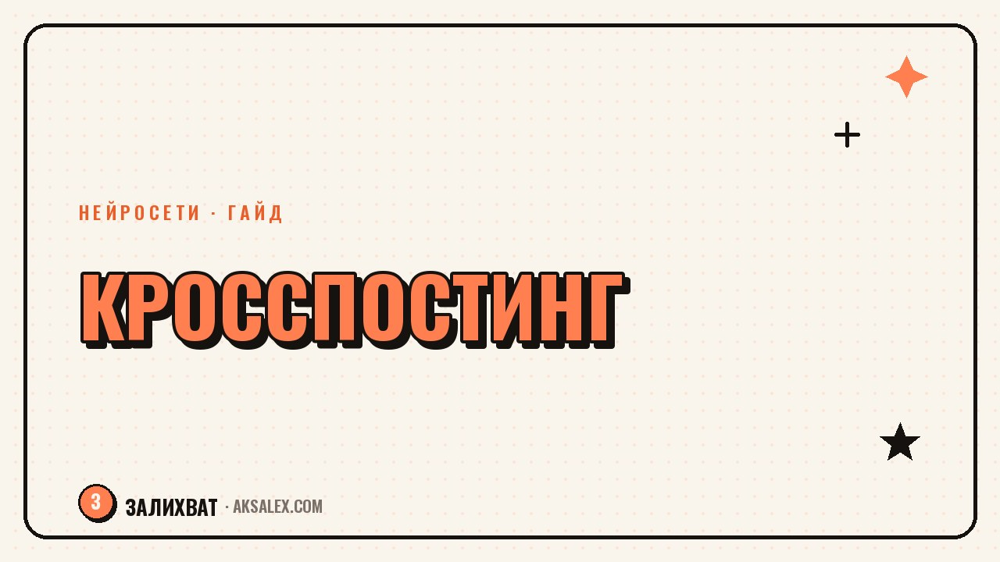

Кросспостинг с нейросетью: один пост под все соцсети

Ты написала хороший пост, опубликовала его сразу в трёх соцсетях один в один - и охваты странно разные, будто это три разных текста для трёх разных людей. Дело в том, что у каждой площадки свой формат чтения: где-то заходит длинный текст с историей, где-то только короткая мысль с картинкой. Нейросеть помогает не переписывать всё с нуля, а быстро подгонять один и тот же смысл под привычки каждой аудитории.
Почему копия один в один работает хуже оригинала
Алгоритмы соцсетей и привычки читателей сильно расходятся. В одной сети люди листают ленту вертикально и читают первую строку до того, как решат раскрыть текст. В другой открывают пост целиком и ждут связной истории с началом и концом. Одинаковый текст в обоих случаях либо обрезается не там, либо выглядит слишком коротким для формата.
Из-за этого метрики проседают не потому, что тема неинтересна, а потому, что упаковка не подходит площадке. Адаптация занимает немного времени, но напрямую влияет на то, дочитают ли пост до конца.
Как нейросеть адаптирует один текст под разные форматы
Возьми готовый пост как основу и попроси нейросеть переработать его под конкретную площадку: указать желаемую длину, тон и то, нужен ли призыв к действию в конце. Смысл и структура при этом сохраняются, а меняется подача.
Что указать нейросети при адаптации
- Целевую площадку и примерную длину текста для неё
- Нужно ли сократить до одной мысли или можно оставить историю целиком
- Тон: разговорный, экспертный или более официальный
- Формат абзацев: сплошной текст или короткие блоки с отступами
- Нужен ли отдельный призыв к действию под площадку
Чем отличаются форматы по площадкам
| Площадка | Длина текста | Особенность подачи |
|---|---|---|
| Telegram-канал | Средняя, с абзацами | Читают целиком, ценят личный тон |
| Instagram-подпись | Короткая, с хуком в начале | Первая строка решает, раскроют ли текст |
| VK-сообщество | Средняя или длинная | Хорошо заходят списки и подзаголовки |
| Короткие видео | Минимум текста в кадре | Смысл передаёт речь, а не подпись |
Ошибки кросспостинга, которые режут охваты
- Длинный текст без адаптации вставлен в площадку с коротким форматом чтения
- Хук из одной площадки перенесён на другую, где он не работает так же
- Призыв к действию одинаковый везде, хотя аудитория площадок ведёт себя по-разному
- Форматирование потеряно при копировании: абзацы слиплись в один блок
- Ссылки и упоминания не адаптированы под правила конкретной площадки
Одна и та же мысль заслуживает разной упаковки, потому что читают её в разных условиях: в метро, на бегу или вечером с чашкой чая.
Как выстроить процесс: от черновика до публикаций
Пиши основной вариант текста в той площадке, где формат самый развёрнутый, а затем сокращай его под остальные. Двигаться в обратную сторону, от короткого к длинному, сложнее, потому что приходится придумывать недостающие детали.
Держи все версии одного поста в одном документе рядом друг с другом. Так проще заметить, если смысл потерялся при сокращении, и быстро свериться, что везде сохранён единый посыл.
Чек-лист адаптации перед публикацией
- Длина текста соответствует привычному формату площадки
- Первая строка работает как хук именно для этой ленты
- Форматирование - абзацы, списки, отступы - сохранилось после копирования
- Призыв к действию подходит под поведение аудитории конкретной площадки
- Ссылки и упоминания проверены под правила площадки
Частые вопросы
Нужно ли писать отдельный текст для каждой площадки с нуля?
Нет, достаточно одного развёрнутого варианта, который затем адаптируется под длину и тон каждой площадки. Переписывать смысл заново не требуется.
Как нейросеть понимает, какая длина текста нормальна для площадки?
Она не знает это автоматически, поэтому длину и формат нужно указать в запросе явно, ориентируясь на то, что обычно заходит в этой сети у твоей аудитории.
Что делать, если после сокращения текст потерял смысл?
Сравни короткую версию с оригиналом построчно и верни ключевую мысль, которая выпала. Обычно теряется не тема, а деталь, которая делала пост живым.
Стоит ли публиковать во всех площадках одновременно?
Не обязательно: можно публиковать с разницей в несколько часов, ориентируясь на активность аудитории каждой конкретной площадки.
Как быстро освоить адаптацию текста под разные форматы?
После нескольких постов появляется понимание, какие правки нужны для каждой площадки, и процесс адаптации занимает уже не больше десяти минут на текст.
а не вручную